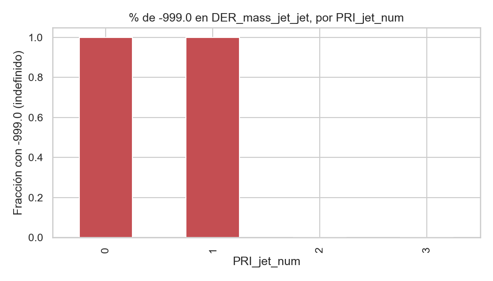
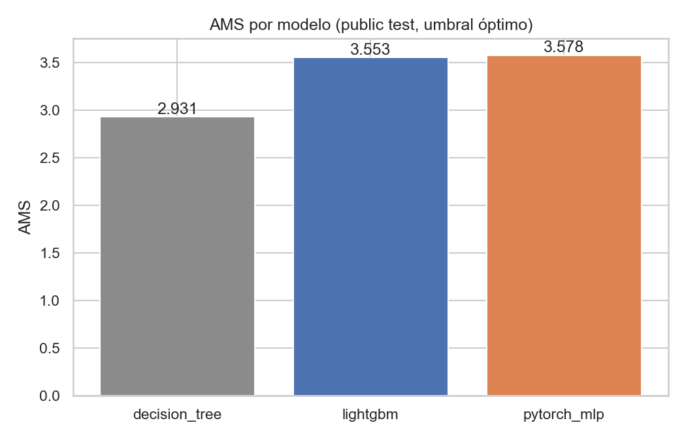
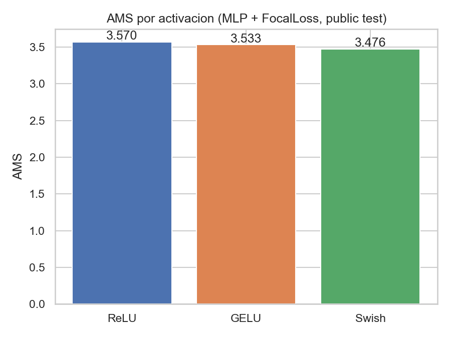

Hunting the Higgs Boson
Binary classification of proton-proton collision events (Higgs-to-tau-tau signal vs. background) using the real ATLAS dataset released by CERN Open Data — the same data behind the 2014 HiggsML Challenge on Kaggle, not a synthetic simulation.
Source on GitHub · part of the Scientific Classification Lab (also includes exoplanet transit classification)
Dataset
KaggleSet column (250,000 / 100,000 / 450,000 events) so results are
directly comparable to the historical 2014 Kaggle competition leaderboard. Downloaded for this
run on 2026-10-01 (atlas-higgs-challenge-2014-v2.csv.gz, 65,630,848 bytes).
The real-data problem: physically-defined missing values
11 columns use -999.0 as a sentinel — not random missingness. Dijet variables are
undefined whenever an event has fewer than 2 reconstructed jets; verified empirically: 100% of
-999.0 in those columns occurs exactly at PRI_jet_num ∈ {0,1}. Fixed with
median imputation grouped by PRI_jet_num (train-only, no leakage)
plus an explicit _missing flag per affected column.

Results — real run, official train/public/private split
Evaluated with AMS (Approximate Median Significance), the actual HiggsML Challenge metric — not accuracy or plain AUC.
| Model | AMS (public test) | AUC | Accuracy |
|---|---|---|---|
| Decision Tree (baseline) | 2.9312 | 0.8756 | 0.7722 |
| LightGBM | 3.5534 | 0.9106 | 0.7906 |
| PyTorch MLP (Dropout+BatchNorm) | 3.5778 | 0.9102 | 0.7900 |
| LightGBM, Optuna-tuned (40 trials) | 3.6414 | — | — |
Held-out private test (450,000 events, never touched during model selection): untuned MLP AMS 3.5728 (0.14% from its public-test value); the Optuna-tuned LightGBM reaches AMS 3.6294 on the same held-out set (0.33% from its public-test value) — confirming the tuning gain is real, not overfit to the public split.

Activation function comparison (custom Focal Loss)
| Activation | AMS (public test) | AUC |
|---|---|---|
| ReLU | 3.5699 | 0.9096 |
| GELU | 3.5328 | 0.9094 |
| Swish (SiLU) | 3.4763 | 0.9074 |

Honest caveat
Reproduce it
git clone https://github.com/Rxyxs/scientific-classification-lab.git
cd scientific-classification-lab/01-higgs-boson-particle-classification
python -m venv venv && venv\Scripts\activate
pip install -r requirements.txt
curl -L -o data/raw/atlas-higgs-challenge-2014-v2.csv.gz \
https://opendata.cern.ch/api/files/1dd5c95f-9224-4f0b-9d98-8ba96601aa4a/atlas-higgs-challenge-2014-v2.csv.gz
gunzip data/raw/atlas-higgs-challenge-2014-v2.csv.gz
mv data/raw/atlas-higgs-challenge-2014-v2.csv data/raw/atlas-higgs.csv
pytest -qPablo Reyes — github.com/Rxyxs. Code: MIT.